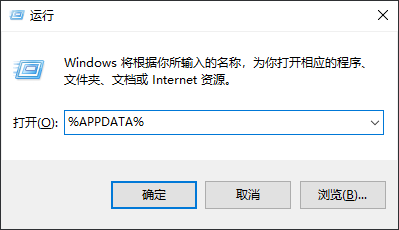
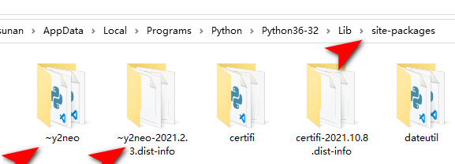

<!DOCTYPE lake>
<p data-lake-id="u60e05c43" id="u60e05c43"><span data-lake-id="u59a076fb" id="u59a076fb">pip 是 Python 包管理工具，该工具提供了对Python包的查找、下载、安装、卸载的功能。<br/>Python 2.7.9+ 或 Python 3.4+ 以上版本的python都自带 pip 工具</span></p><h2 data-lake-id="RdlcL" data-lake-index-type="2" id="RdlcL"><span data-lake-id="u6c7435f5" id="u6c7435f5">配置pip国内镜像</span></h2><p data-lake-id="uc4b0bbc4" id="uc4b0bbc4"><span data-lake-id="u666d9dff" id="u666d9dff">pip安装的包都存在于外国的服务器上，速度会非常慢，可以给</span><code data-lake-id="u1de57811" id="u1de57811"><span data-lake-id="uf4ee55f4" id="uf4ee55f4">pip</span></code><span data-lake-id="ud2d12095" id="ud2d12095">配置国内镜像，直接从国内服务器安装依赖。</span></p><h3 data-lake-id="yJ2Fa" id="yJ2Fa"><span data-lake-id="ucb33ab33" id="ucb33ab33">方式一：自动配置（荐）</span></h3><p data-lake-id="uc42315b0" id="uc42315b0"><span data-lake-id="u9c826c23" id="u9c826c23">可使用如下命令进行自动配置，打开</span><code data-lake-id="u9df3339d" id="u9df3339d"><span data-lake-id="u792597d4" id="u792597d4">cmd</span></code><span data-lake-id="u77e6786f" id="u77e6786f">控制台，运行如下命令：</span></p><span class="yuque-card-unsupported">[codeblock]</span><p data-lake-id="u234bd52a" id="u234bd52a"><span data-lake-id="u9685dc5b" id="u9685dc5b">重置源：</span></p><span class="yuque-card-unsupported">[codeblock]</span><h3 data-lake-id="sAXdc" id="sAXdc"><span data-lake-id="ubd4dd7f6" id="ubd4dd7f6">方式二：手动配置</span></h3><p data-lake-id="u8a7910fa" id="u8a7910fa"><span data-lake-id="u948a4589" id="u948a4589">按</span><code data-lake-id="u0afb04da" id="u0afb04da"><span data-lake-id="u90c76fad" id="u90c76fad">Win + R</span></code><span data-lake-id="u9694130f" id="u9694130f"> 键盘，输入</span><code data-lake-id="uc6826976" id="uc6826976"><span data-lake-id="u6ea0a3b1" id="u6ea0a3b1" style="color: rgb(18, 18, 18)">%APPDATA%</span></code><span data-lake-id="u97f0e96e" id="u97f0e96e" style="color: rgb(18, 18, 18)">按回车。</span></p><p data-lake-id="u41294b13" id="u41294b13"></p><blockquote data-lake-id="ue0613d72" id="ue0613d72"><p data-lake-id="u40a5c79d" id="u40a5c79d"><span data-lake-id="ue2518557" id="ue2518557">通常打开的路径格式如下：C:\Users\用户名\AppData\Roaming\</span></p></blockquote><p data-lake-id="uf621c0bf" id="uf621c0bf"><span data-lake-id="u45c523e3" id="u45c523e3">在</span><code data-lake-id="u1992e0b9" id="u1992e0b9"><span data-lake-id="u243e89f4" id="u243e89f4" style="color: rgb(18, 18, 18)">%APPDATA%</span></code><span data-lake-id="u93c6b812" id="u93c6b812">目录中创建一个</span><code data-lake-id="u365507fc" id="u365507fc"><span data-lake-id="ub0d93cfb" id="ub0d93cfb">pip</span></code><span data-lake-id="ubf549d3f" id="ubf549d3f">目录。</span></p><p data-lake-id="u7d0de2bf" id="u7d0de2bf"><span data-lake-id="u8b6c8e08" id="u8b6c8e08">在</span><code data-lake-id="ua9d4043b" id="ua9d4043b"><span data-lake-id="u7a2500d6" id="u7a2500d6">pip</span></code><span data-lake-id="u6fdb5817" id="u6fdb5817">目录下新建文件</span><code data-lake-id="u7d0a93c0" id="u7d0a93c0"><span data-lake-id="uf3966695" id="uf3966695">pip.ini</span></code><span data-lake-id="u7043bbf5" id="u7043bbf5">，写入如下内容</span></p><span class="yuque-card-unsupported">[codeblock]</span><h2 data-lake-id="pB5of" data-lake-index-type="2" id="pB5of"><span data-lake-id="u2293c6c7" id="u2293c6c7">国内常用pip源</span></h2><p data-lake-id="ud257416e" id="ud257416e"><span data-lake-id="ufceb365c" id="ufceb365c">(经测试，腾讯源最快）</span></p><p data-lake-id="u0bd768c2" id="u0bd768c2"><span data-lake-id="uc55006a3" id="uc55006a3">腾讯源：</span><a data-lake-id="ud8617e2d" href="https://mirrors.cloud.tencent.com/pypi/simple/" id="ud8617e2d" rel="noopener noreferrer" target="_blank"><span data-lake-id="u1823cc91" id="u1823cc91">https://mirrors.cloud.tencent.com/pypi/simple/</span></a><span data-lake-id="u44ec2fbb" id="u44ec2fbb">	  trusted-host：</span><code data-lake-id="u5dfac547" id="u5dfac547"><span data-lake-id="u9a431264" id="u9a431264">mirrors.cloud.tencent.com</span></code></p><p data-lake-id="u3f9674d2" id="u3f9674d2"><span data-lake-id="u99934c1d" id="u99934c1d">清华源：</span><a data-lake-id="u3ab07451" href="https://pypi.tuna.tsinghua.edu.cn/simple" id="u3ab07451" rel="noopener noreferrer" target="_blank"><span data-lake-id="ub04c035c" id="ub04c035c">https://pypi.tuna.tsinghua.edu.cn/simple</span></a><span data-lake-id="ubc68003c" id="ubc68003c"> trusted-host：</span><code data-lake-id="u1a6d8334" id="u1a6d8334"><span data-lake-id="uee85141c" id="uee85141c">pypi.tuna.tsinghua.edu.cn</span></code></p><p data-lake-id="ubfc7bd3f" id="ubfc7bd3f"><span data-lake-id="u09bd61e2" id="u09bd61e2">阿里源：</span><a data-lake-id="ucc915508" href="https://mirrors.aliyun.com/pypi/simple/" id="ucc915508" rel="noopener noreferrer" target="_blank"><span data-lake-id="uc1919fb9" id="uc1919fb9">https://mirrors.aliyun.com/pypi/simple</span></a><span data-lake-id="u604102d4" id="u604102d4">	  trusted-host：</span><code data-lake-id="u5c758311" id="u5c758311"><span data-lake-id="u4a635d42" id="u4a635d42">mirrors.aliyun.com</span></code></p><p data-lake-id="u88af0a6b" id="u88af0a6b"><span data-lake-id="u9200b1a0" id="u9200b1a0">百度源：</span><a data-lake-id="u8277468d" href="https://mirror.baidu.com/pypi/simple" id="u8277468d" rel="noopener noreferrer" target="_blank"><span data-lake-id="u1bf53740" id="u1bf53740">https://mirror.baidu.com/pypi/simple</span></a><span data-lake-id="u9ac4c8e4" id="u9ac4c8e4">	  trusted-host：</span><code data-lake-id="u0bdc4210" id="u0bdc4210"><span data-lake-id="u0646bfe3" id="u0646bfe3">mirror.baidu.com</span></code></p><p data-lake-id="ud41c55c9" id="ud41c55c9"><span data-lake-id="uacb143f6" id="uacb143f6">​</span><br/></p><h2 data-lake-id="t53Kx" data-lake-index-type="2" id="t53Kx"><span data-lake-id="uf209f2ee" id="uf209f2ee">错误处理</span></h2><h3 data-lake-id="DMcCP" data-lake-index-type="2" id="DMcCP"><span data-lake-id="u747a5050" id="u747a5050">找不到pip</span></h3><span class="yuque-card-unsupported">[codeblock]</span><p data-lake-id="u7b9dbad0" id="u7b9dbad0"><span data-lake-id="uda186a6d" id="uda186a6d">执行如下命令即可:</span></p><span class="yuque-card-unsupported">[codeblock]</span><p data-lake-id="u226bc66b" id="u226bc66b"><span class="lake-fontsize-12" data-lake-id="u5f9a9031" id="u5f9a9031" style="color: rgb(38, 38, 38)">第二种方法是使用get-pip.py工具手动安装pip。可以使用以下命令下载get-pip.py文件：</span></p><span class="yuque-card-unsupported">[codeblock]</span><p data-lake-id="u3e455856" id="u3e455856"><span class="lake-fontsize-12" data-lake-id="u2f24a97d" id="u2f24a97d" style="color: rgb(38, 38, 38)">然后使用以下命令安装pip：</span></p><span class="yuque-card-unsupported">[codeblock]</span><p data-lake-id="uc16203d2" id="uc16203d2"><span class="lake-fontsize-12" data-lake-id="ued1a8c48" id="ued1a8c48" style="color: rgb(38, 38, 38)">安装完成后，可以使用以下命令检查pip版本：</span></p><span class="yuque-card-unsupported">[codeblock]</span><h3 data-lake-id="my4mL" data-lake-index-type="2" id="my4mL"><span data-lake-id="udaecbe86" id="udaecbe86">-ip警告</span></h3><span class="yuque-card-unsupported">[codeblock]</span><p data-lake-id="u25981dab" id="u25981dab"><span class="lake-fontsize-12" data-lake-id="u55a73ae9" id="u55a73ae9">按照提示，打开目录</span><code data-lake-id="u3e915dfa" id="u3e915dfa"><span class="lake-fontsize-12" data-lake-id="uc79d7eff" id="uc79d7eff">d:\programs\python\python39\lib\site-packages</span></code><span class="lake-fontsize-12" data-lake-id="uc8bc1edc" id="uc8bc1edc">，删掉所有~波浪号开头的目录</span></p><p data-lake-id="u89d19dfb" id="u89d19dfb"></p><h3 data-lake-id="IQzSD" data-lake-index-type="2" id="IQzSD"><span data-lake-id="u61f18d55" id="u61f18d55">拒绝访问</span></h3><span class="yuque-card-unsupported">[codeblock]</span><p data-lake-id="u58847df4" id="u58847df4"><span data-lake-id="u18cc399f" id="u18cc399f">由于python和pip没有安装在C盘默认路径，所以出现权限不足问题。</span></p><p data-lake-id="uc38f5c75" id="uc38f5c75"><span data-lake-id="u1e3d47f5" id="u1e3d47f5">解决方法：在</span><code data-lake-id="u075968dd" id="u075968dd"><span data-lake-id="u2c82d6a4" id="u2c82d6a4">install</span></code><span data-lake-id="u78b6c2d6" id="u78b6c2d6">后加参数</span><code data-lake-id="ubfdf13ae" id="ubfdf13ae"><span data-lake-id="u2c5cb3c5" id="u2c5cb3c5">--user</span></code><span data-lake-id="ud06001cb" id="ud06001cb">再执行, 例如:</span></p><span class="yuque-card-unsupported">[codeblock]</span>